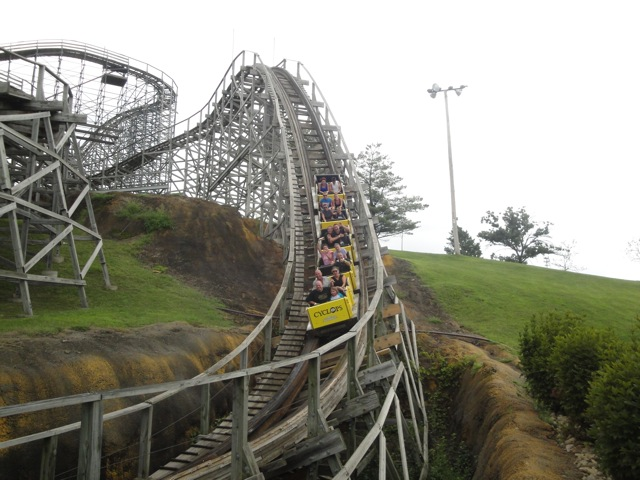
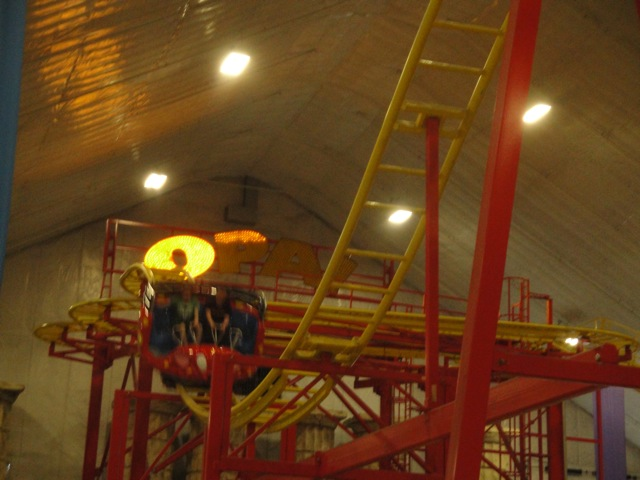
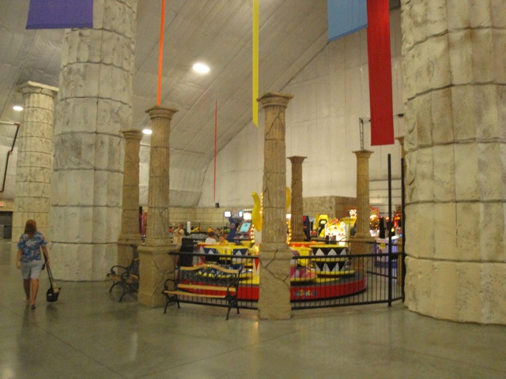

TPR's Middle America Tour
Nickelodeon Universe
Adventureland
Worlds of Fun
Silver Dollar City
City Museum
Six Flags St. Louis
Holiday World
Indiana Beach
Six Flags Great America
Mt. Olympus Timber Falls Valleyfair
All right. Today started off with a bus departure at 5:00 AM. Not a fun way to start the day.
 But it'll all be worth it since today, we get to finally try a SCAD Tower!!!
But it'll all be worth it since today, we get to finally try a SCAD Tower!!!
Unfortunetly, we can't thanks to that SCAD Tower accident a couple weeks ago. But at least we get to ride Hades today.
HA HA!!! YOU GUYS CRASHED!!! (Luckily, I was coincidentally filming the go karts and just managed to film the actual collision itself!) =)
 Looks like we picked a very good day to come to Mt. Olympus.
Looks like we picked a very good day to come to Mt. Olympus.
 People on this tour either seemed to love Hades or hate Hades. So just how was Hades?
People on this tour either seemed to love Hades or hate Hades. So just how was Hades?
Well, I don't love or hate Hades. While I really liked the underground tunnels and was impressed with the prelift section, the rest of the ride just seemed rough and bland.
 Hades Blandness.
Hades Blandness.
 Zeus was sh*t. Next!!
Zeus was sh*t. Next!!
 All right!! Cyclops!! I was really looking foreword to riding this!!
All right!! Cyclops!! I was really looking foreword to riding this!!
Aww. Looks like the ride is having technical difficulties.
"Wait a minute. I don't see a mechanic fixing the ride. In fact, I don't see anyone up there. Hello? Are you invisible or what?"
Nope. It just turns out that the ride operator simply hasn't shown up yet. Ok, let me just get this out of the way right now. Mt Olympus sucks. It's poorly run, not that fun, and just plain overall sucks. To put it simply, it's one of the worst parks visited by Incrediblecoasters. An American La Ronde if you can tell. Except at least at La Ronde, the employees have to AT LEAST F*CKING SHOW UP FOR WORK ON TIME!!!!! And keep in mind, this ride op wasn't just 5 minutes late, she didn't show up until OVER AN HOUR AFTER THE F*CKING PARK OPENED!!!!! Yeah, you know you're at a real quality theme park when the park doesn't even have any expectations on punctuality for their employees.

Well, at least Cyclops is a pretty decent ride with an insane moment of airtime.
Quite frankly, I find the whole age limit for the backseat on Cyclops to be complete bullsh*t. I mean, first of all. Your park has a bunch of issues that need to be solved, and yet you waste your time on this. Second of all, I know that the airtime in the back of Cyclops is intense and all, but really, it's not any more intense than the many extreme moments of airtime on Coaster, and I managed to ride at when I was 17. Hell, Celeste rode Coaster and she was freaking 13 at the time. So yeah, there's no saftey issues with age because the restraint works based on your size, not age. And for being psycologically ready for extreme airtime, that's a decision that parents should make, not a park, especially one as poorly run as Mt. Olympus. But whatever. The good news is that the ride ops here are so lazy that I don't even think they give a damn. So unless you're like 8 years old, you'd probably be fine.
 Cha Ching. Credit gotten.
Cha Ching. Credit gotten.
Many people in our group were bummed that they couldn't get their kiddy coaster credit due to the park's strict No Adults allowed policy. While I don't really care about not being able to ride, I'm just angry that they're wasting their time and energy in a rule that's useless rather than putting that time and energy into something useful. Like making sure that your employees show up to work on time. ;)
 The final credit we needed here.
The final credit we needed here.

In true Mt. Olympus style, the car was barely spinning at all. FAIL!!!!!

Hey wait a minute. Didn't there used to be a DiskO in here?
Well,that's at least...unique I guess. Why the f*ck do you need a Sock Vending Machine!!? Oh well, at least it's a cool useless thing.
Well, at least the water park looks cool.
Hades from the other side of Mt. Olympus.
I wish that someone who knows how to run a theme park will buy Mt. Olympus.
 Nope. No way. No how. I'll go on any coaster, any water slide, even bungee jumping. But I will NOT get in that f*cking death trap. No way. No how.
Nope. No way. No how. I'll go on any coaster, any water slide, even bungee jumping. But I will NOT get in that f*cking death trap. No way. No how.
Unfortunetly, this is pretty much the Mt. Olympus experience. Just sit around and do nothing. At this point, everything in the park has a longass line. And when I mean long, I mean 2-3 hours long. This is partly due to everything running 1 train all the time. And no, I don't mean they're just being lazy. I mean they will only buy one train for each coaster because they're too f*cking cheap to get any more trains. And the ride ops are lazy and slow at dispatching trains. I counted a 5 minute wait from the train getting back into the station to leaving again. So you really can't do much at Mt. Olympus except sit around or stand around in a giant non moving line.
 While these Go Karts look cool, they're not worth a 3 hour wait.
While these Go Karts look cool, they're not worth a 3 hour wait.
Meh, these may be the park's lame go kart track, but with only a 15 minute wait, I'll take it.
 I'm just happy I managed to get on anything at this point.
I'm just happy I managed to get on anything at this point.
Good grief. Even the animals here look depressed.
Don't worry Mr. Goat. I heard that goats have a short lifespan.
And the moment we've been looking foreword to for the past 2 hours!! Lunch!!!
Good bye Mt. Olympus. I certainly hope you shape up next time I come back.
Timber Falls
Home